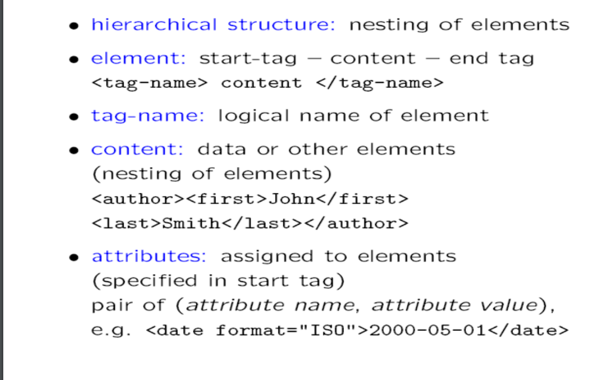

IRS
XML Retrieval
What is XML?
• eXtensible Markup Language
• A framework for defining markup languages
• No fixed collection of markup tags
• Each XML language targeted for application
• All XML languages share features
• Enables building of generic tools
• XML - the eXtensible Markup Language has recently
emerged as a new standard for data representation
and exchange on the Internet.
• An XML document is an ordered, labeled tree.
Each node of the tree is an element
• XML element and is written with an opening
and closing tag. An element can have one or
more XML attributes.
XML
• The standard for accessing and processing
XML documents is the XML Document Object
Model or DOM.
• The DOM represents elements, attributes and
text within elements as nodes in a tree.
• Example:
XML Document
• play
• author Shakespeare
• Macbeth
• act number="I"
• scene number="vii"
•Macbeth’s castle
• verseWill I with wine and wassail ...
• scene
• act
• play
XML Document
XML document as DOM object

Basic Structure
• An XML document is an ordered, labeled tree
• character data leaf nodes contain the actual
data (text strings)
• element nodes, are each labeled with
– a name (often called the element type), and
– a set of attributes, each consisting of a name and
a value.
– can have child nodes
XML properties

XML Example

FileCab
This chapter describes
the commands that manage
the
FileCabinet
application.

XML applications
• XML application refers to an application of
XML to a specific domain?
XML applications cont..
• CML- Chemists can create and publish
molecule specifications for easy interchange.
• MML- To publish equations and all kind of
mathematical terms
• CDF- introduce the idea of webcasting
• -send documents to the user rather than
waiting for the user to come and get them
XML applications cont..
• SMIL- has become a core part part of the
RealNetworks streaming software( Apple
quicktime)
SMIL lets you create fast cuts and true
multimedia presentations.
SVG- Scalable Vector Graphics-implementation
in Adobe products, Corel draw)—One can
draw 2 dimensional graphics using markup
XML applications cont..
• XUL- XML based user Interface Language—
Enable you to describe what user interface
elements you want those browsers to display.
• XBRL- Extensible Business Reporting languageTo describe financial statements.
• RDF- resource description framework-XML
application that specializes in meta-data. One use
RDF to specify info. about other resources.
• One can create vocabulary that describe resources
Uses of XML
• XML has a variety of uses, including:
• Web publishing: XML allows you to create
interactive pages, allows the customer to
customize those pages, and makes creating ecommerce applications more intuitive. With
XML, you store the data once and then render
that content for different viewers or devices
based on style sheet processing using an
XSL/XSLT processor.
Uses of XML
• Web searching and automating Web tasks: XML
defines the type of information contained in a
document, making it easier to return useful
results when searching the Web:
– For example, using HTML to search for books
authored by Tom Wolf is likely to return instances of
the term 'wolf' outside of the context of author. Using
XML restricts the search to the correct context (say,
the information contained in the tag) and
returns only the required type of information. Using
XML, Web agents and robots (programs that
automate Web searches or other tasks) will be more
efficient and produce more useful results.
• General applications: XML provides a standard
method to access information, making it easier
for applications and devices of all kinds to use,
store, transmit, and display data.
• e-business applications: XML implementations
make electronic data interchange (EDI) more
accessible for information interchange, businessto-business transactions, and business-toconsumer transactions.
• Metadata applications: XML makes is easier to
express metadata (Unified Modeling Language
design models or user interface properties, for
example) in a portable, reusable format.
• Pervasive computing: XML provides portable and
structured information types for display on
pervasive (wireless) computing devices such as
PDAs, cellular phones, and others.
– For example, WML (Wireless Markup Language) and
VoiceXML are currently evolving standards for
describing visual and speech-driven wireless device
interfaces.
Uses of XML
• Create other Languges
Many languages are created using XML.
Examples are WML, MathML etc.
• Use in Databases
Modern database such as Oracle and MSSQL
server is providing the XML support in their
databases.
XML-related technologies.
• DTD (Document Type Definition) is used to define the
legal elements in an XML document.
• well-formed XML: proper nesting of elements
• (e.g. is forbidden
• valid XML: document is well-formed and conforms to
document type definition
Declaration of DTD
• in the document header:
• !DOCTYPE name PUBLIC publicid systemid
• !DOCTYPE name SYSTEM filename
XML related technologies
• XML Document Object Model (XML DOM): standard for accessing and processing
XML documents
• The DOM represents elements, attributes and text within elements as nodes in a
tree.
• With a DOM API, we can process an XML document by starting at the root element
and then descending down the tree from parents to children.
• XML DOM (XML Document Object Model) defines a standard way for accessing
and manipulating XML documents.
XML related technologies
• XSD (XML Schema) is an XML-based alternative to DTDs.
XML Schema
XML related technologies
• XHTML (Extensible HTML) is a stricter and cleaner version of HTML.
• XSL (Extensible Style Sheet Language) - XSL consists of three parts: XSLT -
a language for transforming XML documents, XPath - a language for
navigating in XML documents, and XSL-FO - a language for formatting XML
documents.
• XSLT (XSL Transformations) is used to transform XML documents into
other XML formats, like XHTML.
XML-related technologies.
• XPath is a language for navigating in XML documents.
• XSL-FO (Extensible Style Sheet Language Formatting
Objects) is an XML based markup language describing the
formatting of XML data for output to screen, paper or other
media.
• XLink (XML Linking Language) is a language for creating
hyperlinks in XML documents.
• XPointer (XML Pointer Language) allows the XLink
hyperlinks to point to more specific parts in the XML
document.
• XQuery (XML Query Language) is designed to query XML
data.
XML-related technologies.
• SOAP (Simple Object Access Protocol) is an XML-based protocol to let
applications exchange information over HTTP.
• WSDL (Web Services Description Language) is an XML-based language for
describing web services.
• RDF (Resource Description Framework) is an XML-based language for
describing web resources.
• RSS (Really Simple Syndication) is a format for syndicating news and the
content of news-like sites.
• WAP (Wireless Application Protocol) was designed to show internet
contents on wireless clients, like mobile phones.
• SMIL (Synchronized Multimedia Integration Language) is a language for
describing audiovisual presentations.
• SVG (Scalable Vector Graphics) defines graphics in XML format.
• XML parser is used to read, update, create and manipulate an XML
document.
XPath Locator Languages
IR and relational databases
IR systems are often contrasted with relational
databases (RDB).
• Traditionally, IR systems retrieve information
from unstructured text (“raw” text without
markup).
• RDB systems are used for querying relational
data: sets of records that have values for
predefined attributes such as employee
number, title and salary.
IR and relational databases
Why Use XML?
• Represent semi-structured data
– data that are structured, but don’t fit relational
model
• XML is more flexible than DBs
• XML is more structured than simple IR
• You get a massive infrastructure for free
Outline
❶Vector space model for XML IR
Main idea: lexicalized subtrees
Aim:
to have each dimension of the vector space encode a word together with its
position within the XML tree.
How: Map XML documents to lexicalized subtrees.
Book
Title Author
Microsoft Bill Gates
Author
Bill Gates
Microsoft Bill Gates
Title
Microsoft
Author
Gates
Author
Bill
Book
Title
Microsoft
. . .
Book
Main idea: lexicalized subtrees
❶ Take each text node (leaf) and break it into multiple nodes, one for each
word. E.g. split Bill Gates into Bill and Gates
❷ Define the dimensions of the vector space to be lexicalized subtrees of
documents –
subtrees that contain at least one vocabulary term.
Book
Title Author
Microsoft Bill Gates
Author
Bill Gates
Microsoft Bill
Title
Microsoft
Author
Gates
Author
Bill
Book
Title
Microsoft
. . .
Book
Lexicalized subtrees
We can now represent queries and documents as vectors in this space of lexicalized
subtrees and compute matches between them,
e.g. using the vector space formalism.
Vector space formalism in unstructured VS. structured IR
The main difference is that the dimensions of vector space in
unstructured retrieval are vocabulary terms whereas they are
lexicalized subtrees in XML retrieval.
Structural term
There is a tradeoff between the dimensionality of the space and the accuracy of query
results.
If we restrict dimensions to vocabulary terms, then we have a standard vector space
retrieval system that will retrieve many documents that do not match the structure of
the query (e.g., Gates in the title as opposed to the author element).
If we create a separate dimension for each lexicalized subtree occurring in the
collection, the dimensionality of the space becomes too large.
Compromise: index all paths that end in a single vocabulary term, in other words all XMLcontext term pairs. We call such an XML-context term pair a structural term and denote it
by : a pair of XML-context c and vocabulary term t.
Context resemblance
A simple measure of the similarity of a path cq
in a query and a path cq
in a document is
the following context resemblance function CR:
cq
and cd
are the number of nodes in the query path and document path, resp.
cq matches cd
iff we can transform cq
into cd by inserting additional nodes.
Context resemblance example
CR(cq
, cd
) = 3/4 = 0.75.
The value of CR(cq
, cd
) is 1.0 if q and d are identical.
Context resemblance example
CR(cq
, cd
) = ? CR(cq
, cd
) = 3/5 = 0.6.